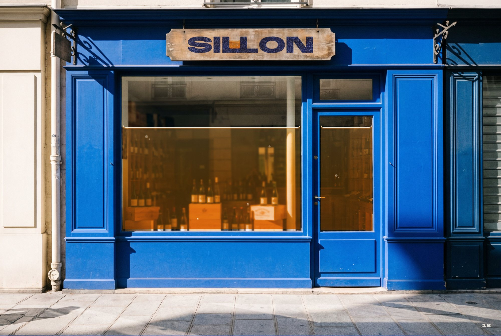
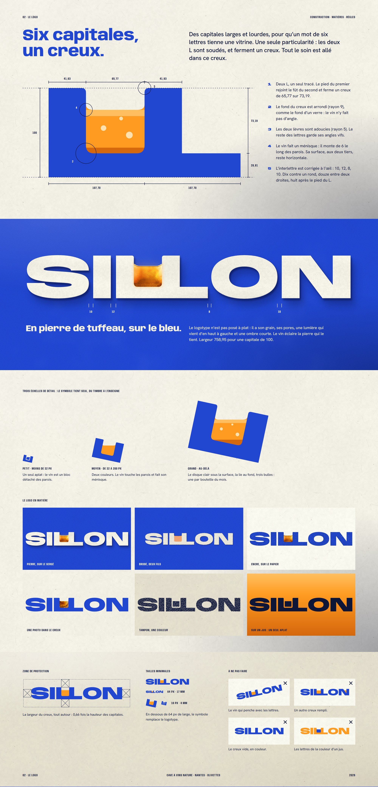
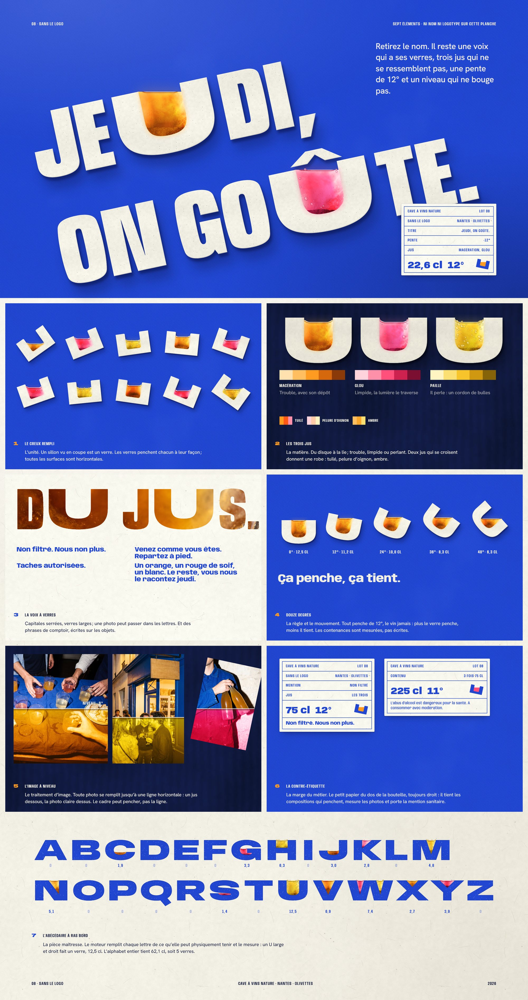
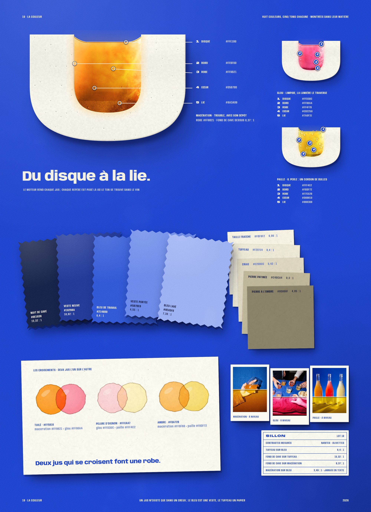
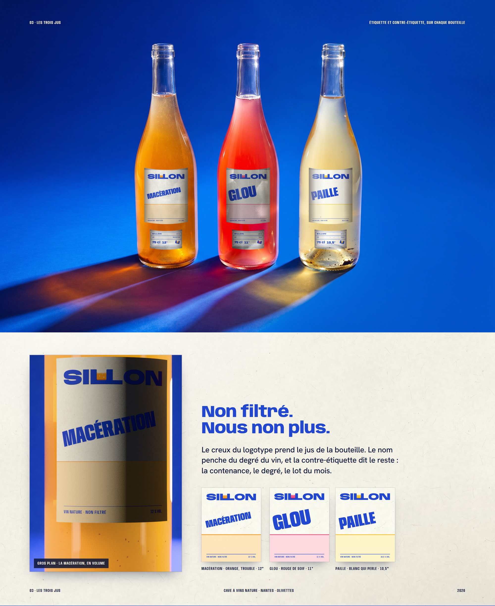
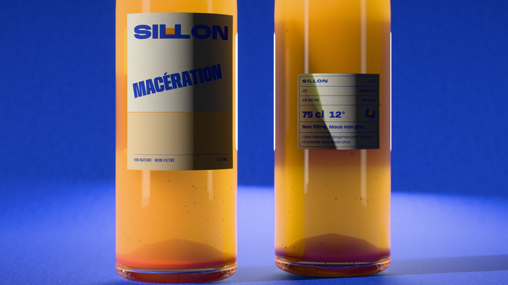
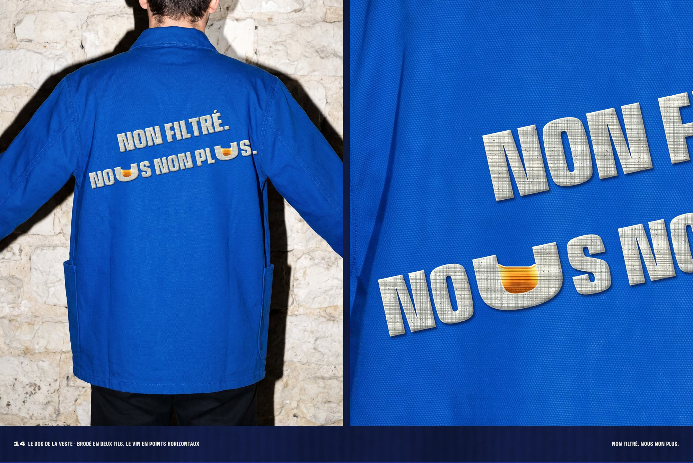
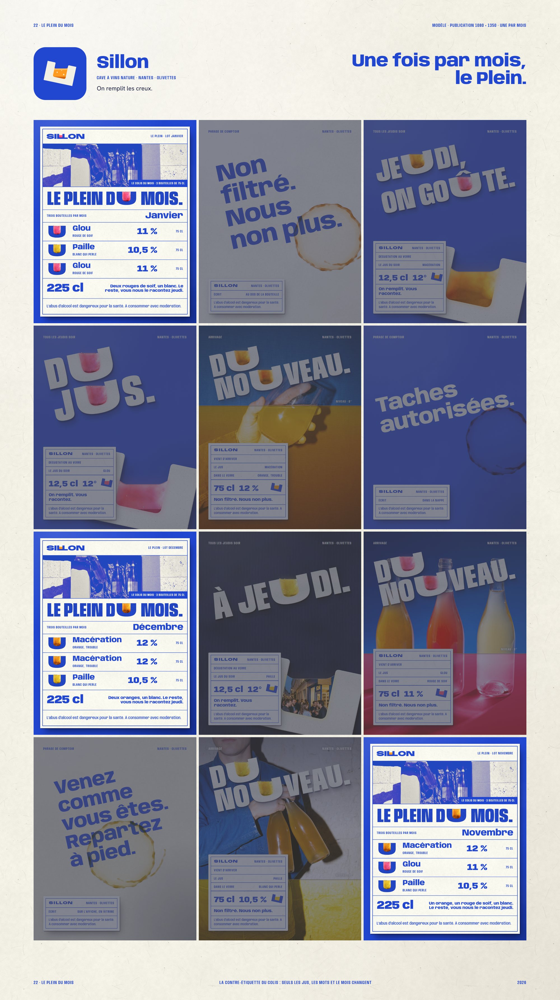

La story du jeudi : le mot bascule, le vin reste.
L’abonnement : trois jus servis l’un après l’autre.
Un arrivage : la photo se remplit jusqu’au niveau.





« Non filtré. Nous non plus. » dans le jus.